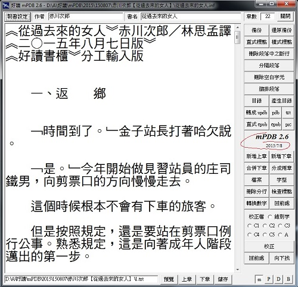

|
|
|
|
|
|
好讀製書程式 mPDB 2.6 周劍輝
mPDB26.zip [下載] 2011/10/22 (493K) 2015/7/8
- 請先在PC或隨身碟上建一個 mPDB26 目錄。
- 將下載的 mPDB26.zip 解壓縮至 mPDB26 目錄。
- 解出的檔案只有五個：
- mPDB.exe
- 錯別字.txt (多半的錯別字是要靠肉眼及文意來判斷。錯別字表則是用於判斷肉眼容易跳過、或疏忽的。錯別字表不可能完美。mPDB所附的只是最膚淺的，方便您自行添加。)
- big5.txt (使用於轉出pdb檔)
- stylesheet.css
- stylesheetV.css (2012/11/14)
- page-template.xpgt
後三者是在產生epub檔時，要複製至epub檔中 (您可以修改這兩個檔案)。
- mPDB.exe 立馬可用，沒有其他囉唆的安裝程式。
- 尚未重新撰寫說明的舊功能，請參看 mPDB 2.1 及 mPDB 2.2 的說明。
- 使用mPDB，螢幕解析度至少要1024x768。
- 任何文字，不論是多罕見的中文字，簡體、日文或韓文，只要在網頁或任何文書軟體上能正常顯示的，都能複製貼上 mPDB 的編輯視窗，正常顯示，並製作成書。
- (2011/12/29) 修正轉出的pdb檔，每章頭尾亂碼的問題。
- (2012/2/21) 修改轉出的epub檔中，與目錄有關的兩個檔案：content.opf及toc.ncx。
- (2012/5/8) 修改轉出的prc檔，會先顯示目錄 (Table of Contents)，目錄上有各章節的連結。
- (2012/6/4) 修改校正規則：5) 若行首是~，若找到此行之錯別字，直接取代，不必請示
- (2012/9/25) 更新stylesheet.css，支援epub 3.0中文直排設定。
- (2012/11/14) 新增stylesheetV.css，及轉直式epub檔功能。
- (2014/8/18) 直式刪節號改用「︙」，及加強「檢查標點」功能：不對稱的標點，舊版只測缺左邊，會標出哪個符號；新版加上測缺右邊。以整段標示起來的段落，是段落內有缺右邊的標點。
- (2015/5/27) 直式破折號改用「︱」U+FE31。
- (2015/7/8) 轉epub檔時，「'」不改。

A1. 如何開啟好讀updb/pdb檔？
B1. 如何將好讀updb檔轉成epub檔？
B2. 如何將好讀updb檔轉成txt檔？
B3. 如何將好讀updb檔轉成prc檔？
C1. 如何新增製書設定檔？
C2. 如何開啟製書設定檔？
C3. 如何儲存製書設定檔？
D1. 如何由一個文字檔快速製書？
D2. 如何逐章快速製書？
E1. 如何快速切割章節？
mPDB 2.6 主要新增功能 2011/11/15
- 除了updb/pdb檔，可產生epub、prc及txt檔。
- 原先製書設定有目錄一項，已廢除。目錄就是inf所在的資料夾，方便移動資料夾。也就是開啟資料夾中的inf，就可修改該資料夾中的文字檔。
- 校正檔，在mPDB.exe的資料夾，除了預設的錯別字.txt，您可自行另設C1.txt, ..., C5.txt；在書的資料夾，您可自設A.txt (我是用這項功能來修改讀友提供的勘誤表)。
- 增加〔分成兩章〕〔合併下章〕功能，方便由一個文字檔快速製書。
- 增加〔新增下章〕〔新增上章〕功能，方便逐章快速製書。
mPDB 2.5 主要新增功能 2010/8/1
製書設定增加作者欄位，並解決PDB檔在Palm上無法閱讀的問題。
mPDB 2.4 主要新增功能 2010/7/21
增加轉成 [橫式] 標點符號的功能。
mPDB 2.3 主要新增功能 2010/7/15
- uPDB 及 PDB 檔的規格說明在 mPDB 2.2。
- (刪節號「……」，用於節略原文、語句未完、意思未盡，或表示語句斷斷續續等。) 因Big5碼無對應直式標點符號，且在Palm機子上無法將字旋轉九十度，之前改用破折號「｜」代替。這個變通方法有後遺症，就是無法還原。為了解決這個問題，mPDB 2.1 改用一個Big5碼較細的豎線「│」替代直式刪節號。
Unicode雖然可輸入顯示的字很多，就是沒有直式的刪節號 (……)。本版則在產生的uPDB檔改為Unicode碼的「￤」，在PDB檔仍維持Big5碼的「│」。
- 直接取代功能，改為不顯示過程，因而能瞬間完成。
- 增加只尋找功能。
- 增加 [備份] [還原備份] 的功能。
|
|
|
|
|
|
|
|